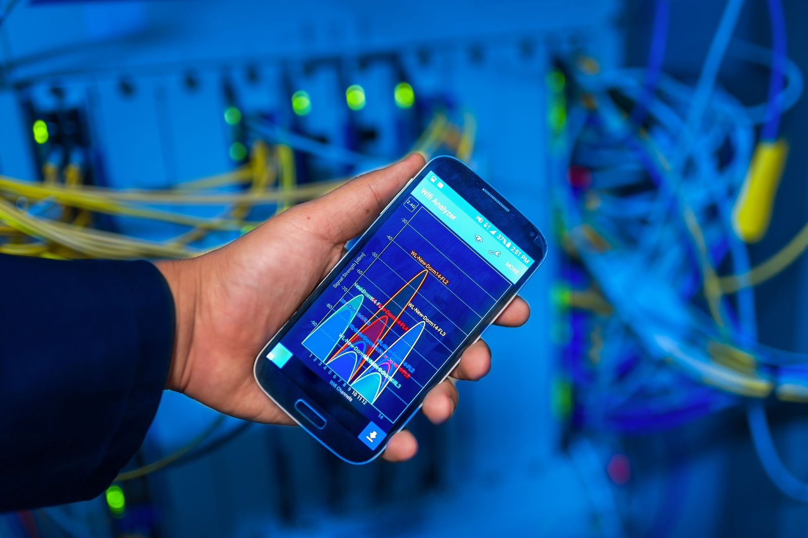
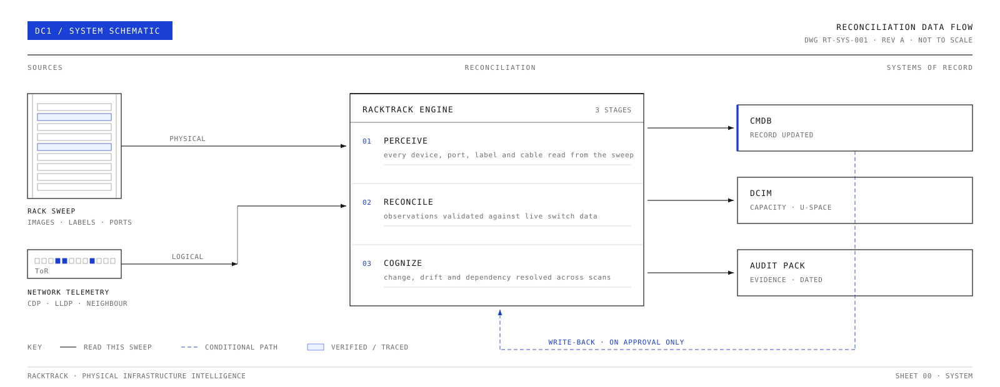
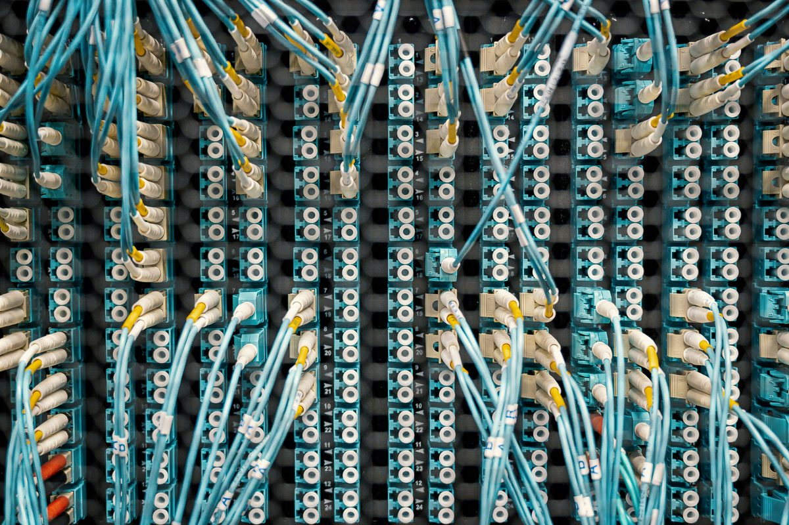

Capture
A guided phone sweep records the cabinet — device faces, labels, rack units, ports, LEDs, and the cable paths you can see.
WHAT THE CAMERA SEES
SOLUTIONS / HOW IT WORKS
Walk the aisle with your phone. RackTrack checks what it sees against your records, and hands your team a record they can actually use — no manual counting, no guessing.
SHEET 01 · THE SIMPLE VERSION
First RackTrack sees the rack. Then it compares that view with your existing records. Then it gives your team something they can actually use.
A guided phone sweep records the cabinet — device faces, labels, rack units, ports, LEDs, and the cable paths you can see.
WHAT THE CAMERA SEES
RackTrack compares the captured rack with your CMDB, DCIM, network, and asset records — so every difference is visible.
WHAT AGREES · WHAT CHANGED · WHAT'S MISSINGThe verified record becomes something your team can use — for planning, troubleshooting, security, migration, and audit work.
A RECORD PEOPLE CAN ACT ONSHEET 02 · SYSTEM SCHEMATIC
The same process from Sheet 01 — drawn as an engineering diagram.

SHEET 03 · LIVE CABINET READER
This is a real cabinet, reconciled the same way RackTrack reconciles yours. Choose a reading on the left, and watch what changes on the rack.
Select a reading
Reading the cabinet top to bottom. Each device registers as the sweep passes it.
WORKFLOW / SIX INTELLIGENCE SURFACES
Capture rack-facing visual evidence that identifies device placement, rack-unit position, labels, visible ports, and front-panel state from a guided sweep.
Classify switches, servers, patch panels, PDUs, controllers, and labels into structured asset records without manual transcription.
Map visible port usage, cable paths, link indicators, and active or unused connections against the physical rack evidence.

Connect rack position, device relationships, ports, and cabling context into a verified topology view teams can inspect and reconcile.
Compare every new scan with CMDB, DCIM, asset, and network records so changes, drift, and missing fields stay visible.
Surface device-level risk signals, missing evidence, firmware context, and audit gaps from the verified infrastructure record.
READY TO RECONCILE
We'll run a guided sweep on a single rack or row and show you the reconciled output next to your CMDB and network records — live.
Request a platform brief